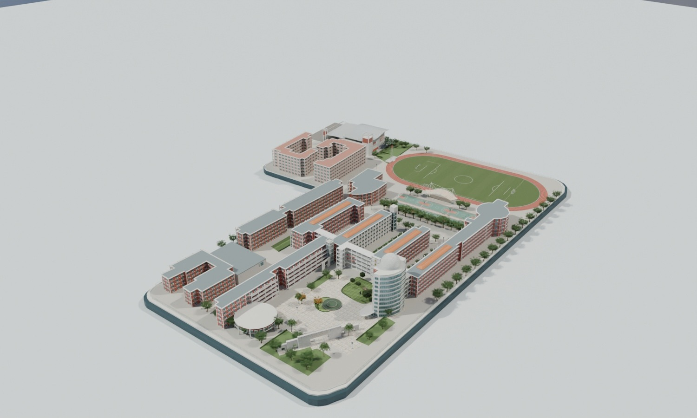

启用 JavaScript 可转动校园模型。也可查看教学广场效果图。
拖动旋转，滚轮或双指缩放。按住 Shift 拖动可平移，也可使用画面右下角的平移按钮。
影片教室依据厦外学生短片《Another Day of Sun》重建。校园细节另参考实拍、《厦门外国语学校校歌》与《Teacher Alex 老师的一天》。房间尺寸、遮挡面与器材数量为估计。公开课室参考语文、英语公开课照片。
地图 © OpenStreetMap contributors（ODbL）。环境光与部分材质来自 Poly Haven（CC0）。使用 Google model-viewer 和 Draco。个人重建项目。